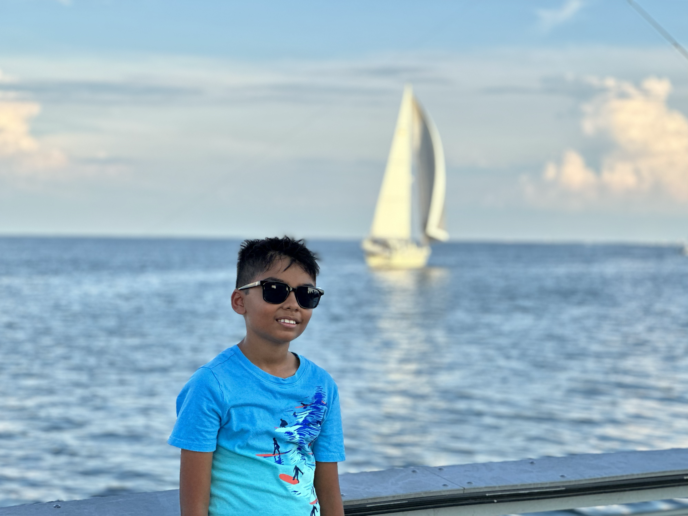

Hi! I'm Rudra and im a devleoper in some languages. I live in the United States.
I go to school at Sunlake Academy of Math and Science. I am in the 8th grade. I love coding and am ready to go above and beyond to learn new things.
I already know how to code in some languages, Scratch, HTML, CSS, Python, and a little bit of JS and C++.
Anything I do must be well designed and well executed.
My career goal is to become a software engineer and work at a big tech company like Google, Apple, or Microsoft.
This was a 2024-2025 Robofest team that I led to first place. It was a custom made robot that planted seeds to increase the amount of oxygen in the environment.
Find more here.
This Hillsborough County STEM Fair project was focused on reading temperature inside boxes with different insulation materials to determine which one was the most effective using an Arduino Uno R4.
Find more here.
This is a Robotics team that I am currently working on. We are using a Raspberry Pi to water plants and keep plants healthy.
Find more here.
Feel free to reach out to me via email: